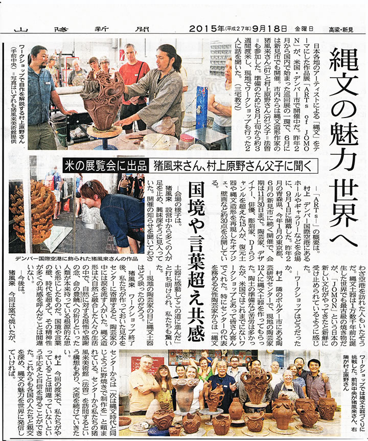
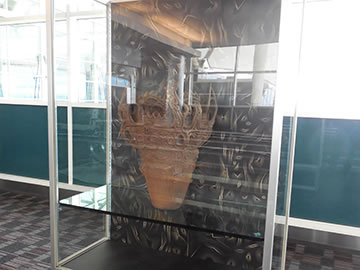
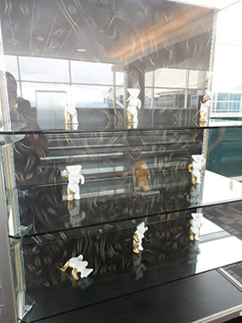
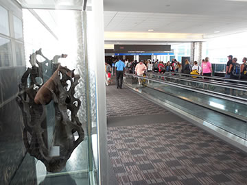
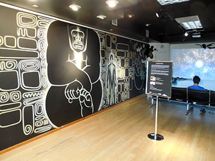

― これまでのイベント（記録） ―

|
→【デンバー国際空港公式サイト（Arts of Jomon - DenverInternational）】
【出展作家（50音順）】
猪風来 Ifurai（縄文造形家）
大森準平 Junpei Omori（陶芸家）
大藪 龍二郎 Ryujiro Oyabu（陶芸家）
大山康太郎 Kotaro Ooyama a.k.a.Mon（ライブペインター／DJ）
金理有 Riyoo Kim（陶芸家）
坂巻善徳 a.k.a.sense（美術家）
小林武人 Taketo Kobayashi（3DGGデザイナー）
澁谷忠臣 Tadaomi Shibuya（グラフィックアーティスト）
篠崎裕美子 Yumiko Shinozaki（陶芸家）
竹谷隆之 Takayuki Takeya（フィギュア造形師）
堀江武史 Takeshi Horie（修復家）
片桐仁 Jin Katagiri（俳優、タレント）
丸岡和吾 Kazumichi Maruoka（髑髏作家）
村上原野 Genya Murakami（縄文造形家）
結城幸司 Koji Yuki（版画家・彫刻家）
ARTs of JOMON in 新見に引き続いて、アメリカでの現代縄文アート展の開催。
日本から15名のアーティストによる縄文造形作品などを展示しました。
→【アメリカでの縄文アート展開（ARTs of JOMON in DENVER に先駆けて）】
|  | |
| 【山陽新聞 2015.09.18】 | |

|
 |

|
 |
|  |

|

|
|
|  |

|